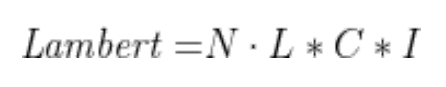
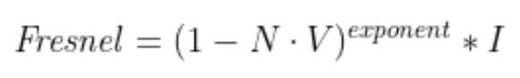
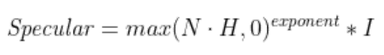
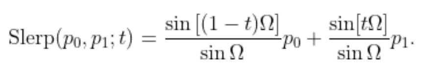

Journey Sand
For the final exam of the Graphics Programming course at ITU, I chose to recreate the sand shader of Journey.
This project was made with pure C++ and GLSL (OpenGL). You can read my paper for details [ here].
As the first step, I looked at [this] GDC talk by John Edwards of thatgamecompany
to analyze the approach the developers took when creating the original shader for Journey.
They broke down the technique into various layers, such as the diffuse layer, rim lighting, or the ocean specular.
This was incredibly helpful, as I got to understand what went into the various elements of their approach.
For my project, I decided to use a deferred rendering model, as it provides better performance
in scenes with many light sources, such as the game's later levels.


The scattered light is calculated through the Lambertian reflectance model. Its implementation in Journey slightly differs, however.
To accentuate the reflections, the up axis of the normal is reduced and the overall intenstiy of the reflectance is increased.
During the talk, it was mentioned that the developers originally intended to use the Oren–Nayar reflectance model instead to calculate the diffuse layer,
but it proved to be costly which the PlayStation 3 couldn't handle.
Out of curiosity, I implemented it as a secondary option, which can be turned on via the debug menu.
After reverese engineering the shaders of the PC port, I found out that the game still uses Oren-Nayar, but only on the clothing of the player character.
The glittery layer that is meant to represent the individual grains of sand is achieved by using a noise texture as normal map.
I used Gaussian normal distribution to generate the noise.
By using RenderDoc, I discovered the different mipmap resolutions used in the game, which then I could use in my own implementation as well.

To create the rim lighting seen on the edges of the sand dunes, I used Schlick's approximation of the Fresnel factor.

In Journey, the sand dunes have an ocean-like quality to them. The dunes reflect a strong light beam as the sun hits the surface.
I replicated this magical effect by implementing the specular formula of the Blinn-Phong reflection model.
When we are looking at larger bodies of sand, some grains stand out as they are perfectly oriented in a way that the light gets reflected directly into our eyes.
These larger sparks I replicated through a specular map that has larger, sparsely scattered grains.

As the final layer, I recreated the "waves" on top of the dunes by blending in additional normals.
This layer samples two textures, one used for longer waves and another for smaller ones.
By using Kevin Shoemake's three-way linear interpolation formula, I could interpolate between these two textures based on the steepness of the dunes.
The steeper sides have longer waves, while the more horizontal areas sample the smaller ones.
To make the textures render crisp, I enabled anisotropic filtering. This makes sure that the grains don't become blurry when observed at lower angles.
For additional flair, I also implemented bloom as post-processing effect, as it is quite prominent in Journey as well.